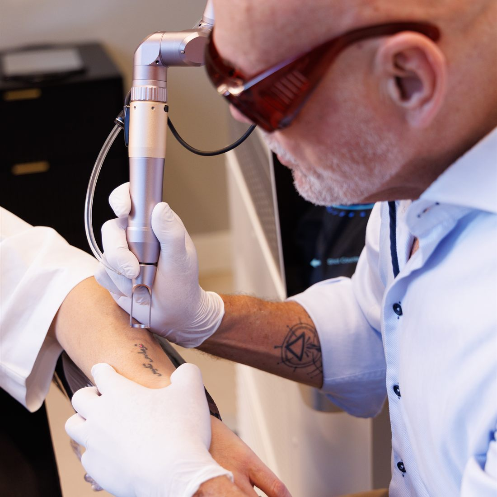
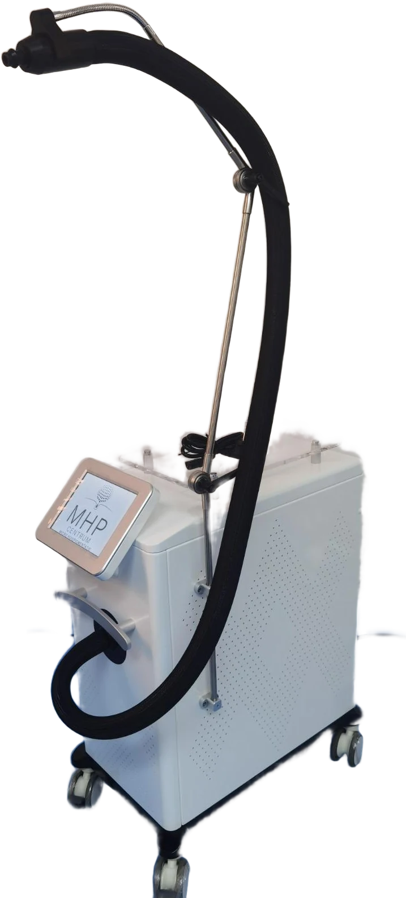

Het is veruit de meest gestelde vraag, en meestal de reden dat mensen het nog even uitstellen. Het eerlijke antwoord: u voelt het. Maar het is korter en beter te verdragen dan de meeste mensen verwachten, en er is tegenwoordig veel meer aan te doen dan een paar jaar geleden.
De sensatie wordt vrijwel altijd op dezelfde manier beschreven: een korte, scherpe tik, alsof iemand een elastiekje tegen uw huid laat schieten. Daarbij hoort een warm gevoel, omdat er warmte vrijkomt op het moment dat de puls het pigment raakt.
Twee dingen die het in verhouding zetten. Ten eerste: de meeste cliënten vinden het verwijderen vervelender dan het zetten van de tattoeage, maar véél korter. Ten tweede: het is geen aanhoudende pijn. Het is een reeks losse tikken, met ruimte ertussen, en tussendoor kan altijd even gepauzeerd worden.
Anders dan bij het zetten van een tattoeage gaat er geen naald door uw huid. Een picosecondelaser stuurt een extreem korte lichtpuls af die wordt opgenomen door het pigment. Dat pigment warmt in een fractie van een seconde op en valt uiteen in kleinere deeltjes, die uw lichaam daarna zelf afvoert.
Wat u voelt is dus vooral warmte, niet een prik. En omdat de puls korter duurt dan een miljoenste van een seconde, wordt het omliggende weefsel maar heel even belast. Dat is precies waarom deze techniek comfortabeler is dan oudere lasers: minder warmte die blijft hangen, minder napijn.
Een sessie is bovendien kort. Een kleine tattoeage is vaak een kwestie van enkele minuten; een grote duurt langer, maar dan wordt er in delen gewerkt. De behandeling zelf duurt doorgaans korter dan het gesprek eromheen.
Sinds november 2026 werken wij met een cryo-koeler. Die blaast een onafgebroken stroom lucht van ongeveer −40 °C over de behandelzone, terwijl er gewerkt wordt.

Belangrijk om te weten: uw huid bevriest daar niet van. Het is de lucht die zo koud is, niet uw huid. Die koude luchtstroom voert de warmte af die de laserpuls veroorzaakt, vóórdat u die als pijn registreert.
De koeling doet drie dingen:
IJs alleen, zoals vroeger gebruikelijk was, koelt voor en na — maar juist niet op het moment dat het nodig is. Dat is het verschil.
Dat is geen keuze maar een regel: als pigmentspecialist mogen wij verdovende crème niet voorschrijven of verstrekken. Wilt u toch verdoving gebruiken, dan kunt u die via uw huisarts verkrijgen en zelf meebrengen naar de afspraak. Laat het ons vooraf weten, dan houden we daar in de planning rekening mee — verdovende crème heeft tijd nodig om in te werken.
In de praktijk kiezen de meeste cliënten ervoor zonder te werken, zeker nu er tijdens de hele sessie gekoeld wordt.
Direct na afloop is de huid rood en warm, vergelijkbaar met een lichte zonverbranding, en soms licht gezwollen. Dat zakt meestal binnen een dag of twee. U krijgt schriftelijke nazorginstructies mee — over reinigen, hydrateren en het vermijden van direct zonlicht — zodat de huid optimaal kan herstellen tussen de sessies door.
De napijn valt bij de meeste mensen mee: een gevoelige, warme plek die binnen een dag wegtrekt. Veel cliënten gaan na de afspraak gewoon weer aan het werk.
Ja, u voelt het. Het is een korte, scherpe tik met warmte erbij, een reeks keren achter elkaar, gedurende een paar minuten tot een half uur afhankelijk van de grootte. Door tijdens de hele behandeling te koelen is dat voor vrijwel iedereen goed te doen — en het is in elk geval korter dan het zetten van de tattoeage destijds.
Twijfelt u of het voor u te doen is? Kom langs voor een gratis consult. We kunnen de koeling laten voelen zonder dat er één puls wordt afgegeven, zodat u zelf kunt inschatten wat u ervan vindt.
Tijdens een gratis consult beoordelen we uw tattoeage, bespreken we het aantal sessies en kunt u de koeling uitproberen zonder behandeling.
Plan een consult